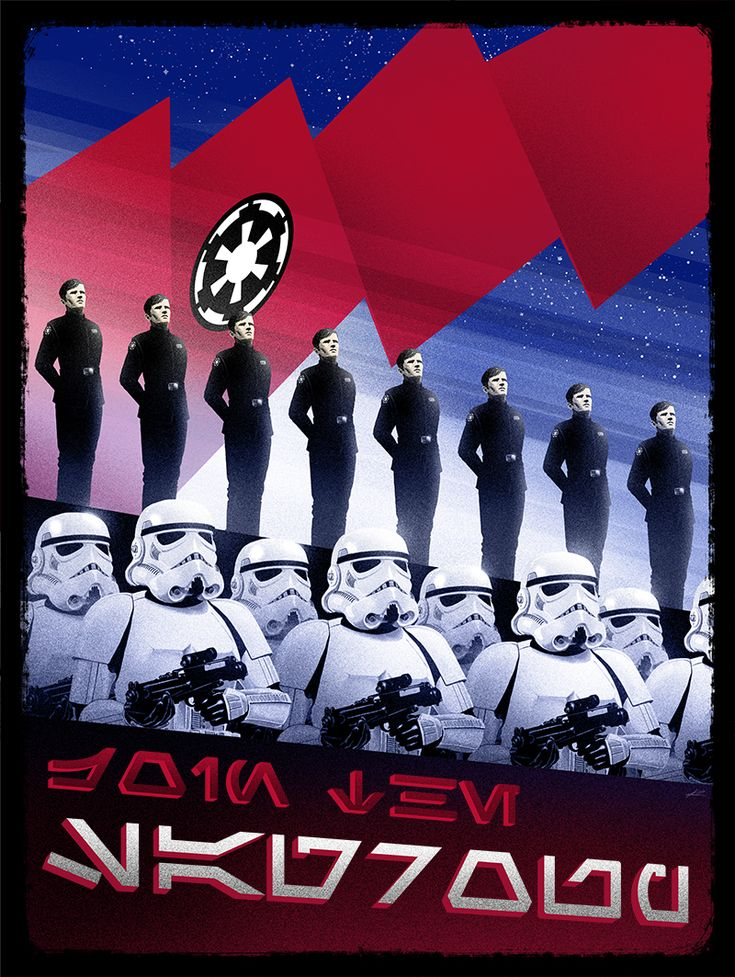
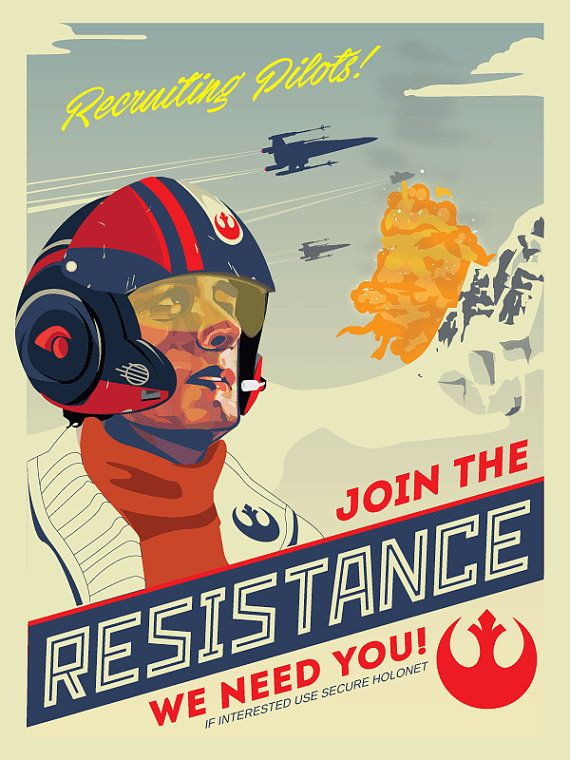
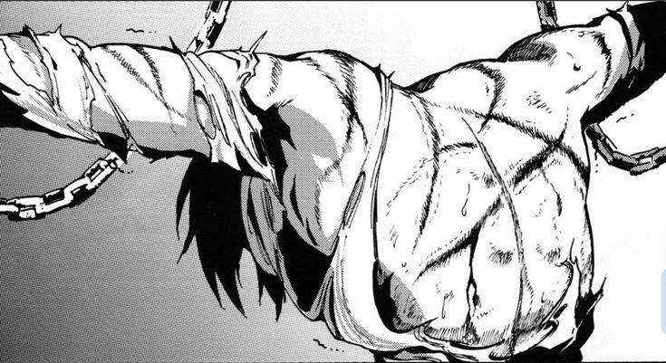

Em um mundo sombrio, onde o caos e a corrupção reinavam, Hadomini surgiu como um líder implacável, determinado a impor sua visão autoritária sobre todas as nações. Ele era conhecido como "O Ditador Supremo", e sua ambição não conhecia limites. Com inteligência, força e uma astúcia inigualável, ele conquistou nações uma por uma, espalhando seu domínio por todo o globo.Enquanto isso, em uma pequena vila nas montanhas, um jovem chamado Toddynho, conhecido por seu coração puro e coragem, se levantava contra as injustiças do mundo. Ao saber das atrocidades cometidas por Hadomini, Toddynho decidiu que não podia ficar parado enquanto o mal se espalhava.
Toddynho, armado com sua determinação e habilidades extraordinárias, partiu em uma jornada para enfrentar Hadomini. Após enfrentar inúmeros desafios e derrotar os soldados de elite do Ditador Supremo, Toddynho finalmente chegou ao trono de Hadomini.Os dois se enfrentaram em uma batalha épica, com o destino do mundo pendendo na balança. Hadomini, confiante em sua invencibilidade, subestimou a força do herói. Mas Toddynho, movido pelo desejo de libertar o mundo, lutou com tudo o que tinha.

Depois de uma longa e árdua batalha, Toddynho conseguiu derrubar Hadomini. O Ditador Supremo, percebendo sua derrota iminente, tentou implorar por misericórdia, mas Toddynho sabia que ele nunca mudaria. Com um golpe final, Toddynho derrotou Hadomini, libertando o mundo de seu jugo.O mundo, agora livre, começou a se reconstruir. Toddynho foi celebrado como um herói, mas ele preferiu retornar à sua vila, onde poderia viver em paz, sabendo que havia cumprido sua missão.

Em um momento crítico da batalha, Hadomini revelou sua verdadeira força, um poder sombrio que ele havia guardado para essa ocasião. Apesar de todos os esforços de Toddynho, o herói foi superado pelo poder avassalador de Hadomini. Com um golpe cruel, o Ditador Supremo derrotou Toddynho, deixando o mundo sem esperança.
Com a derrota de Toddynho, Hadomini consolidou ainda mais seu poder. Ele impôs sua vontade sobre o mundo, mergulhando-o em uma era de escuridão e opressão. A resistência foi esmagada, e qualquer esperança de liberdade parecia perdida. Hadomini se tornou uma lenda, um ditador invencível que reinaria por toda a eternidade.
VOCE SALVOU TODOS PARABENS